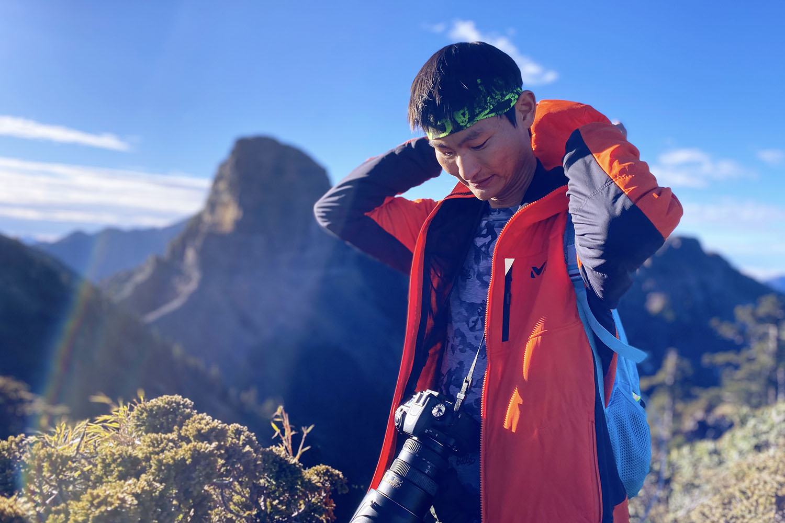
▲ 穿上 MILLET Breather Toi 化纖外套登山寫故事（圖片來源：Popo）
【特色介紹】
MILLET Breather Toi 化纖外套（以下簡稱「MILLET 化纖外套」）是如何做到集保暖與優雅於一身呢？答案是內層的 3DeFX+®。這項由日本 TORAY 團隊（東レ）所開發的新技術有三大訴求，分別是保暖、彈性與透氣。3DeFX+® 的核心材料是中層的 3D 立體螺旋彈性纖維，四種螺旋形的纖維交織在一起，能夠使得它比傳統填充材料更蓬鬆，並且擁有比較大的伸展性與彈性，進而形成更多空間儲存空氣以阻絕體溫逸散。使用 3DeFX+® 內層能夠讓外套變得更加輕便且美觀，又兼具保暖防寒的機能。
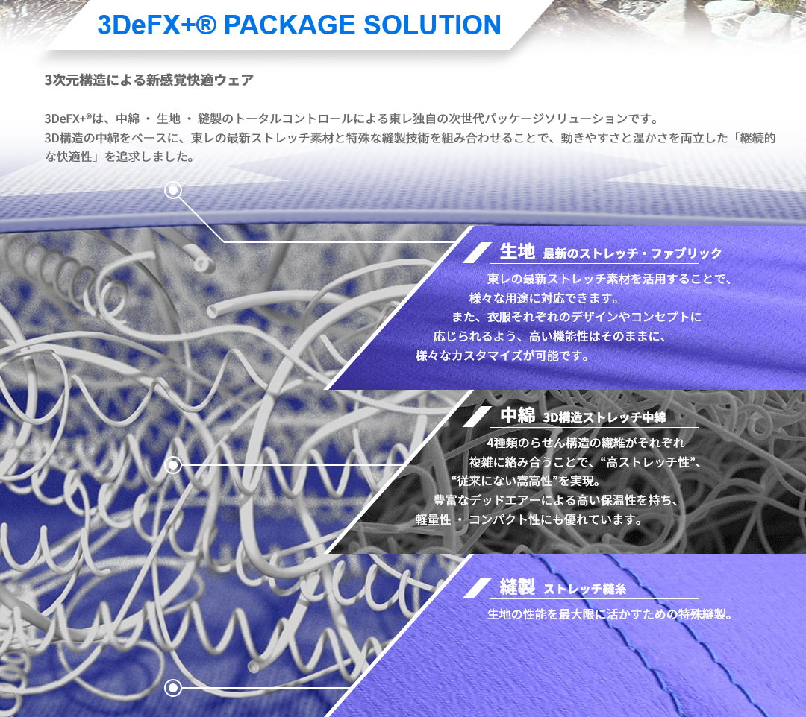
▲ 3DeFX+® 的纖維結構與技術細節（圖片來源：TORAY 團隊）
外套表層的部分，則是採用最先進的 BREATHER 四向彈性輕量化面料，並且使用特殊縫製技術來最大化隔熱層與織物的性能。BREATHER 具備防水的能力，其原理是將具有強疏水性的矽固定在纖維深處，由於它並非塗層式的防水機制，因此其疏水性能夠非常持久，不因洗滌次數增加而產生折扣。同時，由於纖維之間留有相當程度的空隙，使得它仍然維持高透氣性，能夠在運動時將內層濕氣有效率地排出體外，以維持穿著的舒適性。簡而言之，BREATHER 能夠有效提升保暖與靈活度，並為運動員帶來持久舒適感。
結合了 3DeFX+® 內層與 BREATHER 面料的優勢，MILLET 化纖外套相當輕量化，並且具有非常好的壓縮性，方便收納與攜帶。
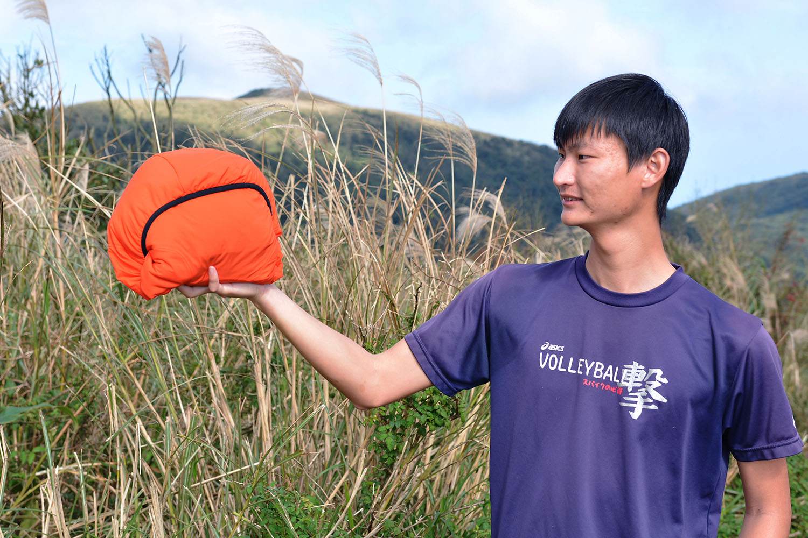
▲ MILLET 化纖外套收摺成小巧的模樣（圖片來源：Alan）
除了性能以外，MILLET 化纖外套在功能性的設計上也相當友善，雙向拉鍊設計不僅更有型，也讓人更容易調節下擺對流。在揹負重裝繫上腰封而使得腰側口袋無法使用時，左胸前拉鍊口袋能夠用來收納如手機等重要隨身物品。下擺、袖口與帽緣為黑色耐磨鬆緊帶，不僅美觀，更增加衣物使用的壽命。
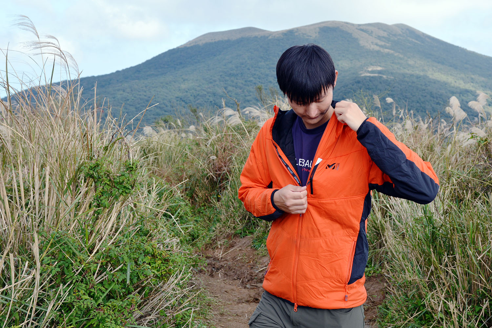
▲ 胸前拉鍊口袋能夠用來收納重要隨身物品（圖片來源：Alan）
在實際穿著 MILLET 化纖外套上山前，便早有耳聞 MILLET 產品耐用之口碑，親眼看見這件外套的設計與做工，立刻湧上一股一種「果不其然」的心情。而當我第一次穿上 MILLET 化纖外套，馬上就被它的輕量化、舒適度以及保暖效果所震懾，在我過去穿過和見過的所有外套裡，沒有一件能夠像它一樣同時在這三方面發揮地如此出色。
▲ 猜猜我們去哪兒？（圖片來源：Popo）
去（2019）年十二月，我和宇宙浪人夥伴們安排了兩趟高山健行，分別造訪奇萊南峰、南華山和大霸尖山群峰，這兩趟行程中我都是以 MILLET 化纖外套為主要的保暖外層，真正在野外印證了它強悍的機能。
【奇萊南華實測】
奇萊南峰和南華山是入門級的高山百岳，一般常以「奇萊南華」稱呼之，標準行程為兩天一夜至三天兩夜。
奇萊南華的路線分成兩個部分，從屯原登山口至天池山莊這段路屬能高越嶺道西段，是日治時期的警備道路，也是國民政府時期的保線道路，沿途大多平緩好走。由天池山莊經天池通往奇萊南峰與南華山路段則為登山步道及泥土山徑，沿途幾乎都是箭竹林。這次我們選擇三天兩夜的行程，一來是團裡有初登百岳的朋友，因此安排得比較從容，另一方面則是想順訪位於能高越嶺道西段的尾上山。
可惜，由於這次前往奇萊南華時，正逢濕冷的東北季風增強之際，寒流來襲導致台灣中北部高山都有降雪出現，在我們起登那天，雪山、合歡山、南湖大山等高山都降下了入冬初雪。位於中海拔的能高越嶺道雖然沒有下雪，卻也足足下了大半天豪雨，使得我們不得不打消攀登尾上山以及原定造訪光被八表紀念碑的念頭。
防水力不科學
在如此嚴苛的降雨條件下，除了雨衣，大概沒什麼衣服能夠逃過雨水的浸蝕，我想這次新配備的 MILLET 化纖外套也一樣。不過，我還是很好奇這件 MILLET 化纖外套的能耐究竟如何。
出發前一天，我和夥伴 Sean 從台北搭車先抵另一位夥伴 Alan 家，一路上也是下著不間斷的豪雨，我將 MILLET 化纖外套當成雨衣穿，結果非但外套本身沒濕，連沾在外套表面上的水都內聚成一粒粒晶瑩剔透的小水珠，根本無法附著在面料上，只需要輕輕抖一抖整件外套就像是乾的一樣。於是我心裡有一股衝動，就這樣一路淋雨到天池山莊，看看會發生什麼事吧！
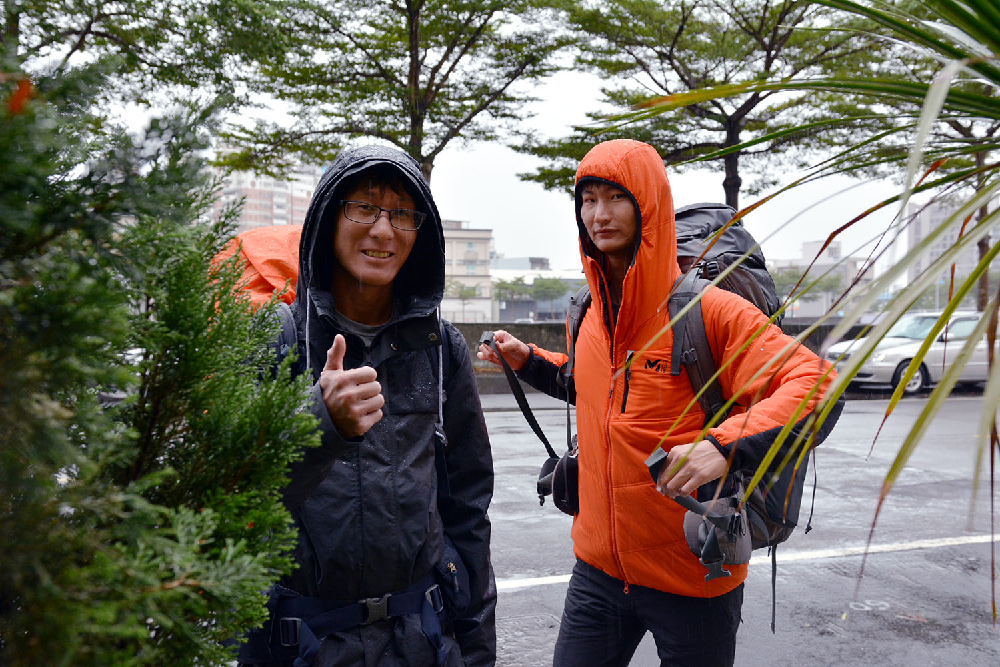
▲ 出發前一天在滂沱大雨中抵達 Alan 的家（圖片來源：Alan）
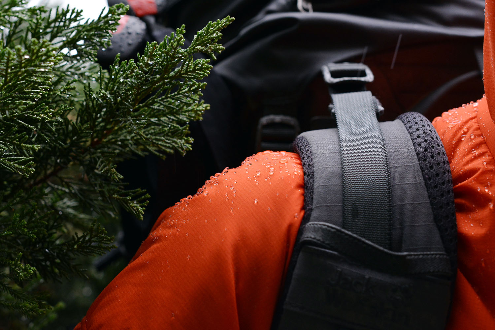
▲ 水珠無法附著在 MILLET 化纖外套的表面（圖片來源：Alan）
在淋雨接近五小時之後，我們總算抵達天池山莊，不意外地，外套果然濕了，但是令人意外地，只有雙肩、腰部和下背部是濕的，其他部位仍然保持乾燥。那麼問題來了，為什麼那三個部位會濕呢？
經過五個小時雨水的摧殘，外套仍然能大致保持乾燥，顯示出 BREATHER 面料強悍的防水能力，然而雙肩、腰部以及下背部因為背包部件（揹帶、腰封、臀墊）不斷摩擦的關係，使得水分受壓而滲透面料的效果增強，最終突破防線。換句話說，倘若今天只是單純穿著 MILLET 化纖外套，至少能夠抵抗五個小時降雨，是多數防水外套仍無法達到的標準。
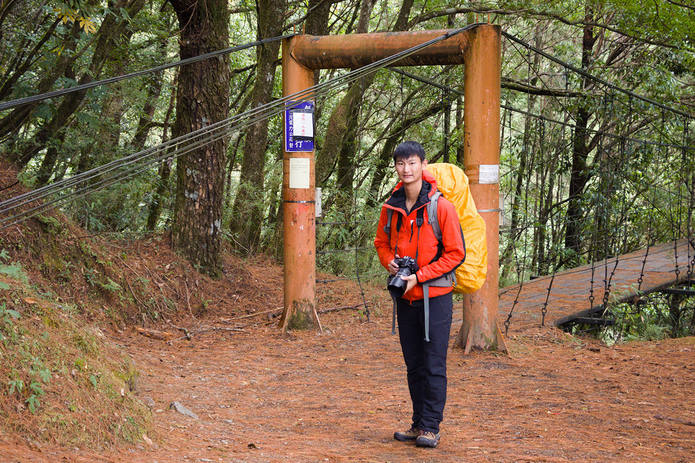
▲ 即將穿 MILLET 化纖外套淋雨五個小時雨（圖片來源：Sean）
透氣性超乎預期
縱然 MILLET 化纖外套具有快乾的特性，在寒冷又持續降雨的高山上，要把外套晾乾著實是一項不可能的任務。原本想趁著到山莊分配床位時，窩在管理室用暖爐烘，不過總不好意思賴在裡頭太久。入睡前，我發現外套還有一點潮濕，由於原本就有打算穿外套睡覺的關係，於是我心一橫便把外套穿上，決定用體溫直接把外套烘乾。
用體溫烘外套的策略還挺奏效的，不過一刻鐘的時間，濕外套帶來的黏膩與悶蒸感已經消失，取而代之的是乾爽與舒適的體驗。
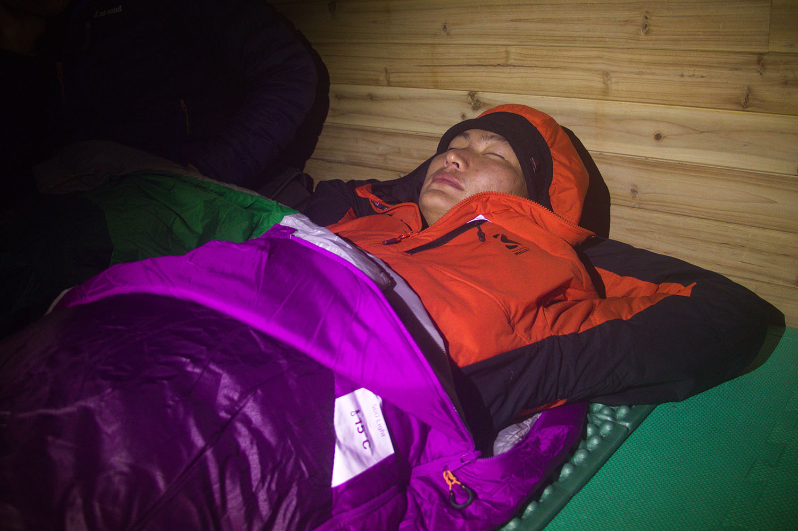
▲ 直接用體溫烘乾潮濕的 MILLET 化纖外套（圖片來源：Alan）
由於直接穿著外套進睡袋的關係，在烘乾的過程中，我甚至還可以感受到蒸騰的水氣從睡袋口竄出，足見 MILLET 化纖外套對於水氣的調控相當出色。事實上，拜 MILLET 化纖外套優異的透氣性所賜，在這趟溼漉漉的行程裡，大部分的時間我都感覺相當舒爽，即使出汗也能夠很快蒸散，不曾在衣內反潮，皮膚也不會濕濕黏黏的。
防風耐寒不落人後
第二天攀登奇萊南峰和南華山，是這三天行程中最嚴苛的一天，倒不是路程有多困難，而是因為氣溫正值低谷，只有攝氏 -2 至 2 度，再加上一整天都陰雨綿綿，北風凜冽，如果沒有做好防寒措施，恐怕只要在戶外待一下就會嚴重失溫。這天我的穿著配搭，以一件底層和一件中層為主，兩件都屬於輕薄型的款式，外頭則加上 MILLET 化纖外套和一件雨衣。這樣的配置讓我在冰點氣溫中吹風淋雨將近五個小時，仍然保持核心溫度與非常舒適的體感，其中的最大的關鍵就是 MILLET 化纖外套防風耐寒的機能。
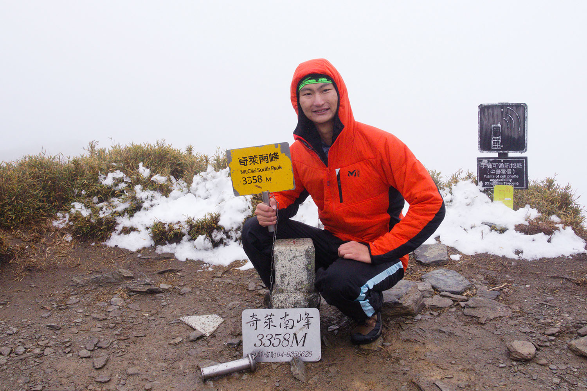
▲ 氣溫低於冰點、滿佈冰霜的奇萊南峰頂（圖片來源：Sean）
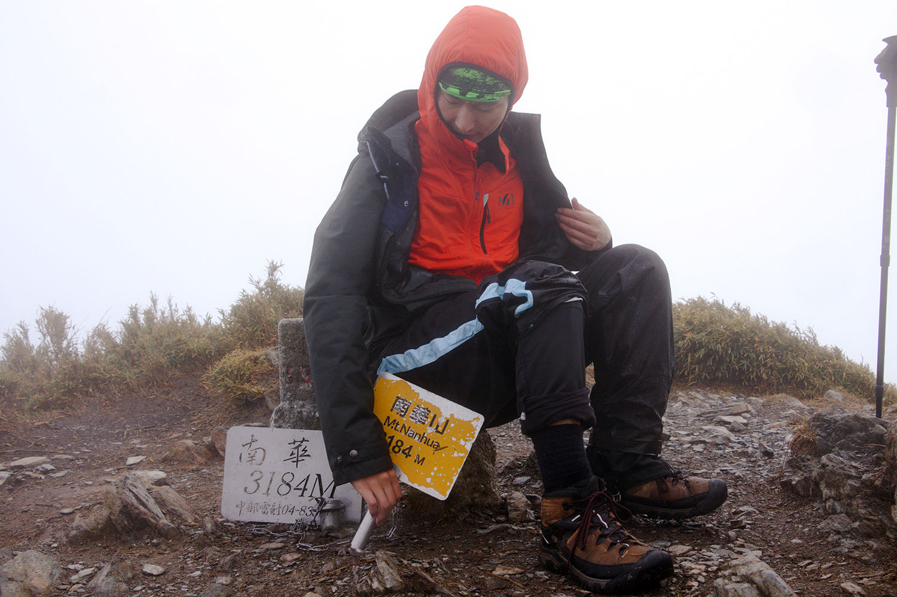
▲ 沒有 MILLET 就會冷到炸裂的南華山頂（圖片來源：Sean）
這次我還做了一個大膽的嘗試，就是為了輕量化而只攜帶輕巧的 15 度睡袋上山，這就是為什麼我會穿外套睡覺。事實證明，有了 MILLET 化纖外套的幫助，我可以更妥善地配置裝備，在同樣安全舒適的前提下，更加落實輕量化的目標，即使在不到攝氏 5 度的山屋裡，用 15 度睡袋也可以睡得溫暖香甜。後來去大霸尖山群峰時，我也是使用同樣的配套，避免攜帶厚重的 0 度睡袋，結果屢試不爽，又是一整夜好眠。
【大霸尖山群峰實測】
大霸尖山群峰包含從九九山莊前往大霸尖山沿途的加利山與伊澤山，以及通過大霸尖山之後的小霸尖山。一般而言，攀登大霸尖山群峰需從觀霧管制站進入大鹿林道東線，並且步行 17（經捷徑）或 19（全程林道）公里抵達位於馬達拉溪谷的登山口，隨後再走 11 公里山徑才能抵達大霸尖山的霸基，來回需時三天兩夜，是條在入門等級中稍微進階的路線。其中，加利山與伊澤山相對容易，大霸尖山之霸頂因保護脆弱地形的緣故不開放攀登，而小霸尖山則需要攀登岩壁方可抵達頂端，是這趟當中危險性較高的地形。
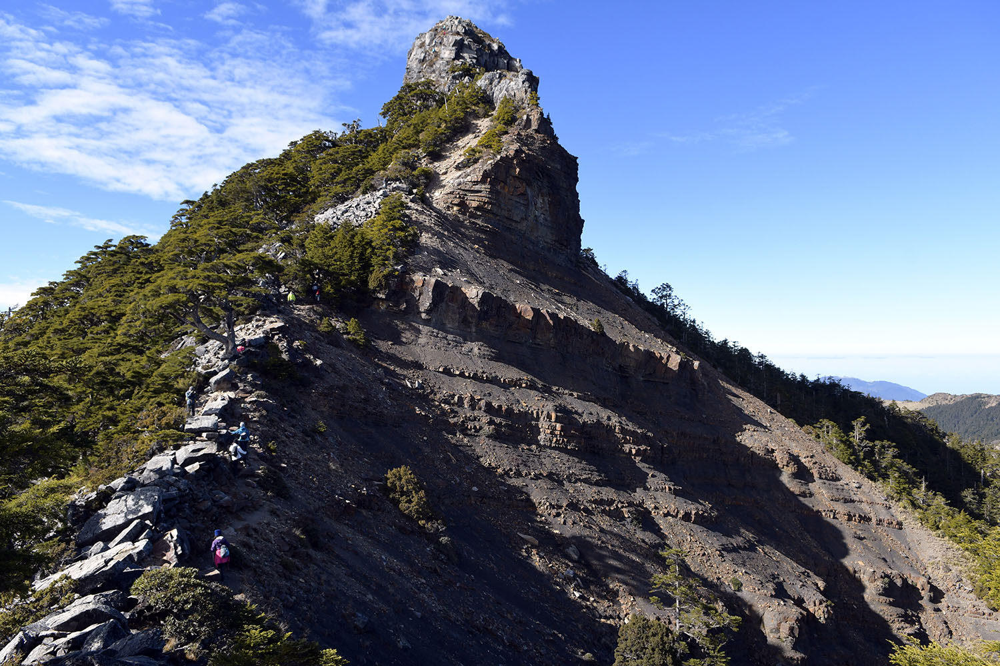
▲ 險峻的小霸尖山具有石瀑、碎石坡和攀岩地形
穿著靈活不拘束
為了較靈活且安全地攀登小霸尖山，許多人會選擇將背包、外套和登山杖等物品放置在霸基，可見小霸尖山地形對於許多人來說具有相當難度。而為了測試 MILLET 化纖外套的靈活度，我選擇將全身的行囊原封不動地揹上山，並且沿途捨棄拉繩，直接徒手上攀。結果如同預期，不論身體和四肢如何伸展都不會受到外套限制，也不會有繃住手腳的感覺。
更重要的是，在攀登的過程中，手部與身體都容易和岩石摩擦，意味著外套的保護性和抗磨耐刮能力相當重要，MILLET 化纖外套蓬鬆的特性能夠提供身體與岩石摩擦的緩衝空間，除此之外，最外層的 BREATHER 面料本身也相當耐磨，不會在攀登的過程中產生破損或傷痕。
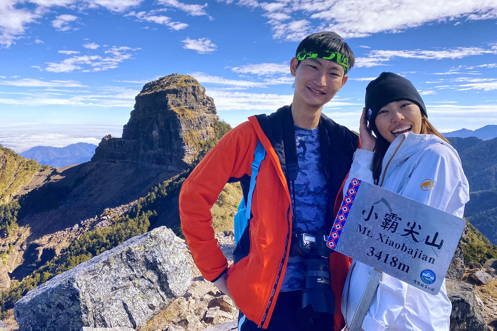
▲ 穿著 MILLET 化纖外套登頂小霸尖山（圖片來源：Popo）
抗磨耐操安心上路
攀岩的情況雖然比較嚴苛，但畢竟也不那麼常見。高山健行的過程中除了岩石地形外，最常見的就是箭竹林，這次奇萊南華和大霸尖山群峰的路徑上，都有不少箭竹叢生的路段，行經這些路段最大的困擾，就是被綿延不盡的箭竹「洗澡」，不只濕，才會不斷被長短不一的竹桿戳刺。
抗磨耐刮的 MILLET 化纖外套在這樣的地形也能夠發揮它的保護作用，特別是它具有足夠的緩衝空間，不論是減緩箭竹戳刺到衣物和身體的強度，還是提供我們自身反應的時間，都有莫大的幫助。在大霸群峰路線中，箭竹林最密集的區域是在前往加利山的路上，特別是從鞍部通往加利山頂的那段路，幾乎都是游在箭竹海裡頭，多虧有 MILLET 化纖外套的保護，讓我能夠自由自在地邊走邊回頭幫大家拍照。
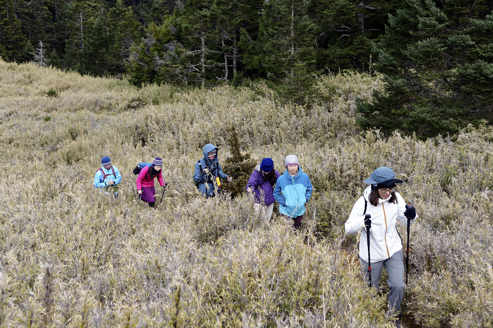
▲ 加利山路線上的箭竹海
我會說，MILLET 化纖外套提供一層氣墊，全面呵護著我們的身體，穿上 MILLET 化纖外套，彷彿回到母親的子宮裡那樣溫暖、舒適又安全，於是我們可以像個嬰兒般，用最單純且毫無防備的心情，躺在中霸坪的箭竹叢上沉沉睡去。
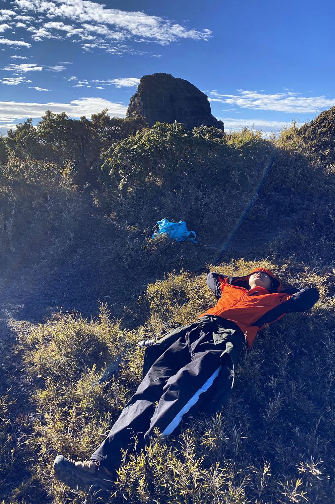
▲ 穿上 MILLET 化纖外套，躺在箭竹上午睡也沒問題（圖片來源：Popo）
【總結】
在實際穿著 MILLET 化纖外套登山以前，我以為登山外套最好的選擇就是那些貴鬆鬆、動輒上萬新台票的產品，這也是窮困如我為什麼以往總是選擇犧牲輕量化，來滿足登山與戶外運動的舒適和保暖。現在，MILLET 化纖外套讓我可以用更輕鬆的方式走出戶外、走入山林，甚至在舒適度和保暖方面不減反增。具體而言，正如本文所下的小標，MILLET 化纖外套擁有不科學的防水能力，透氣性超乎預期，防風耐寒不落人後，穿著靈活不拘束，並且抗磨耐操，讓所有披上它的人都能夠安心上路，著實是一件非常值得推薦的外套。
● 防風禦寒：★★★★★
● 疏水透氣：★★★★★
● 抑菌防臭：★★★☆☆
● 抗刮耐磨：★★★★☆
● 舒適靈活：★★★★★
● 做工品質：★★★★★
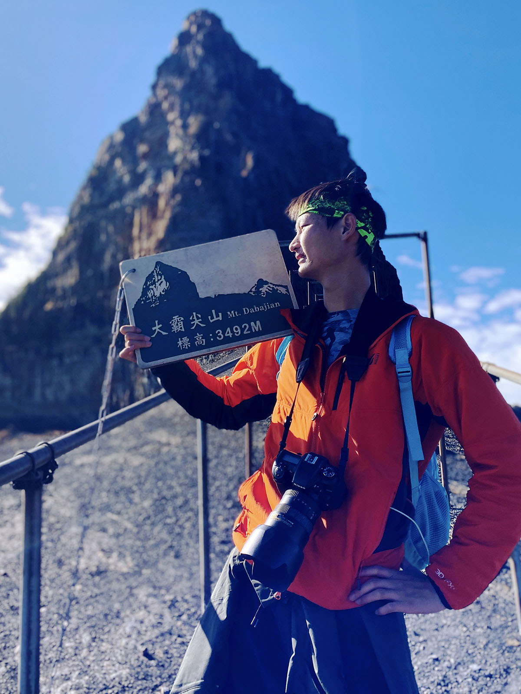
▲ 不能登頂的大霸尖山，只能在霸基拍照留念（圖片來源：Popo）
MILLET 化纖外套並沒有特別強調抑菌防臭的性能，從以上的星星也可以發現這個項目是它的相對弱點，不過因為它擁有極佳的透氣性，因此汗水不易在衣物內部聚積，自然減少了細菌滋生的機會。實際穿著的經驗裡，從第一次穿上這件外套開始，直到這次走完大霸群峰，足足一個月的時間裡頭我都沒有清洗過它，也只有殘留輕微的汗味，而這些汗味，大多是因為大霸下山時一路下雨，穿著雨衣導致排汗機制受到阻礙而留下的。可以說，MILLET 化纖外套利用它優異的透氣性能來彌補抑菌防臭方面的不足。
「又到了一年一度的冬天。期待嗎？」在文章的最後，我想這句話可以再重新問一次，或許在擁有 MILLET Breather Toi 化纖外套以後，各位也會擁有不一樣的答案。那麼，要到哪兒可以買到這一件外套呢？首先拜訪 GO WILD 野聚戶外的網站，進入門市據點頁面，然後找到離你最近、並且有 MILLET 小標記的門市，到現場就能享受店員們專業的服務囉！如果想要事先查閱商品資訊及不同配色，可以參考 GO WILD 野聚戶外的線上商城。
順帶一提，西元 1921 年發跡於法國里昂近郊 Saint-Fons 的 MILLET 公司位於阿爾卑斯山區的 Annecy，這是一個美麗而悠閒的湖畔小鎮，也是我最愛的法國小鎮之一。
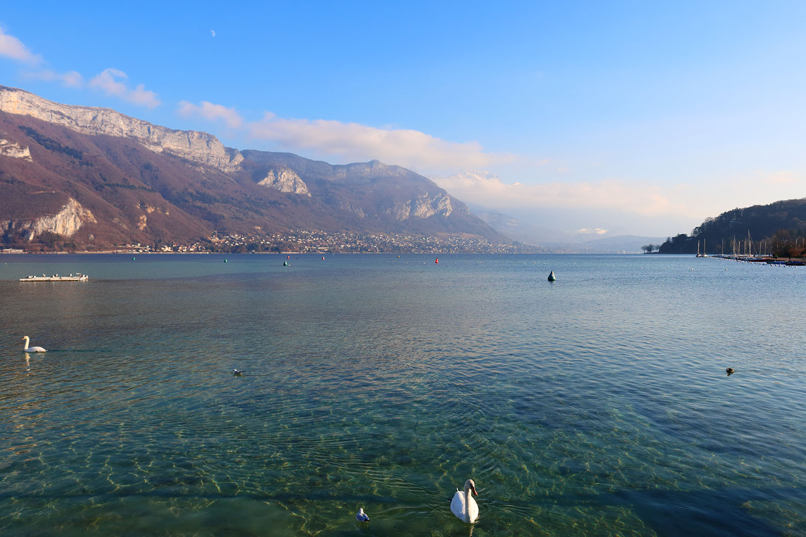
▲ 冬天美麗的 Annecy 湖畔小鎮
本文同步發表於健行筆記： ● 【衣測】輕量登山新選項：MILLET 防潑保暖化纖外套 更多故事請關注宇宙浪人工作室。 更多相片請參見相簿：奇萊南華、大霸群峰。 本文由 GO WILD 野聚户外贊助推出。